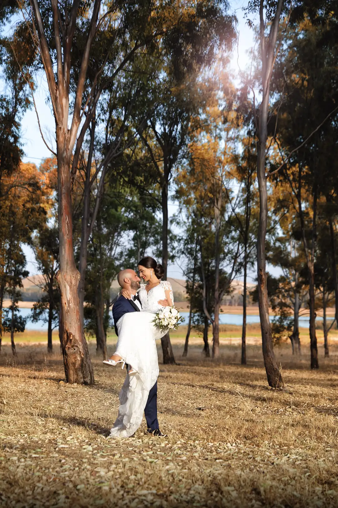
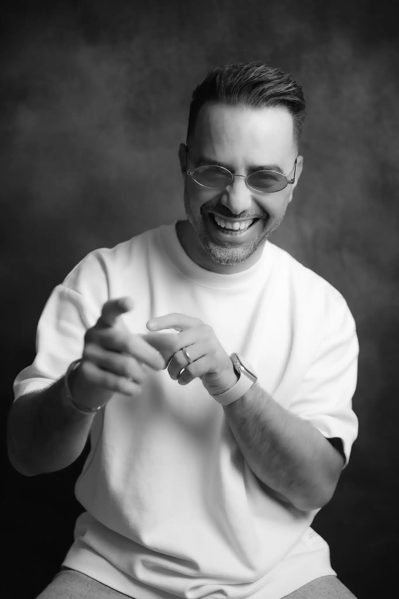

Tre generazioni di fotografi. Una sola famiglia. Una sola missione: rendere eterno ogni istante che conta.
Ogni matrimonio racconta una storia diversa.
Lo studio fotografico D'Aleo nasce nel 1953 a Paceco, in provincia di Trapani. Da allora, tre generazioni di fotografi si sono susseguite portando avanti la stessa dedizione verso il proprio mestiere.
Oggi Francesco D'Aleo guida lo studio insieme al proprio staff, unendo la tradizione di famiglia a uno sguardo contemporaneo su ogni cerimonia.

Tre generazioni della famiglia D'Aleo, un unico studio, la stessa passione tramandata dal 1953.
Ogni scatto è studiato nella luce, nella posa e nel momento giusto per essere colto.
Dall'anello al bouquet, dal sorriso allo sguardo: nulla è lasciato al caso.
Non esistono due matrimoni uguali: ogni servizio nasce su misura per voi.

Francesco D’Aleo nasce nel 1985. Appassionato d’arte, amante della musica e della letteratura, inizia la sua carriera professionale lavorando come assistente durante gli studi, sviluppando una forte passione per la fotografia di matrimonio alla ricerca di un punto di vista reale e immediato.
Con il passare degli anni e la crescita professionale, sceglie definitivamente questa strada, definita da un'eleganza dichiarata e da un linguaggio descrittivo pieno di dettagli. I suoi scatti, che rifiutano la facilità e la semplificazione, delineano uno stile elegante, ricercato, spontaneo ed emozionale, in cui luce, forma e colore esprimono la classe di chi affida a lui il proprio giorno più importante.
Lo studio si trova nel cuore di Paceco, a pochi minuti da Trapani ed Erice.